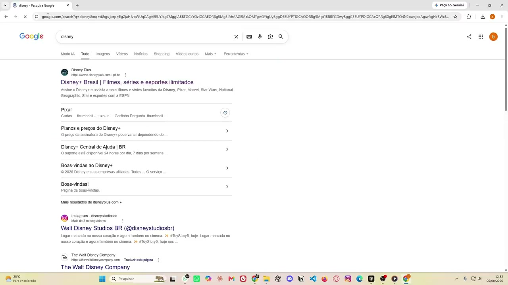

Copiar HTML bloco a bloco
Centenas de linhas minificadas, sem estrutura limpa, sem contexto para a IA.
Capture DOM, CSS, Tailwind, JS e assets — e receba um ZIP organizado, pronto pra abrir no Cursor, Claude Code, Lovable ou qualquer IA. Ideal pra adaptar VSLs e páginas PLR que já convertem.

ZIP pronto pra vibe coding & AI builders
DevTools aberto, Ctrl+S, caçar CSS computado, baixar asset por asset. Horas depois o layout ainda quebra — e o ZIP do “Salvar como” não serve pra editar com IA.
Centenas de linhas minificadas, sem estrutura limpa, sem contexto para a IA.
Estilos inline, folhas externas e utilities espalhadas — impossível de remontar rápido.
Imagens, fontes, mídia e scripts quebram. A página “quase” igual não converte.
Você quer adaptar o que funciona — não reinventar layout do zero toda semana.
Instale, capture, exporte e edite — sem conta, sem terminal, sem servidor no meio.
Adicione a extensão ao Chrome. Tutorial incluso. Sem login.
Abra a página (ou selecione um elemento) e clique. Roda local.
HTML, CSS, JS, assets, Tailwind, meta e README organizados.
Abra no Cursor, Claude, Lovable, Codex e adapte como projeto seu.
Não é um HTML salvo com Ctrl+S. É um pacote limpo que dá pra ler, editar e mandar pra IA.
Uma tarde de trabalho (ou um freela) custa bem mais do que o acesso vitalício.
Tudo que você precisa pra clonar, exportar e editar — pagamento único.
Pagamento único · menos que um almoço, uma vez só
Oferta encerra em
Garantia de 7 dias. Testa num projeto real — se não economizar seu tempo, devolvemos 100%.
Queremos que criadores, afiliados e builders testem o fluxo completo sem atrito. O valor está no tempo economizado em cada VSL e landing — não numa assinatura mensal.
Sim. Garantia incondicional de 7 dias. Se não gostar, devolvemos 100% do valor — sem burocracia e sem pergunta.
Se você trabalha com VSL, PLR, lançamentos ou vibe coding, já sabe: o layout que vende raramente nasce do zero. O MySiteCloner captura a estrutura completa — HTML, CSS, Tailwind, JS e assets — e entrega um ZIP limpo pra você editar no Cursor, Claude Code, Lovable e afins.
Processamento 100% local. Sem conta, sem enviar o DOM pra servidor. Você clona, baixa e trabalha em cima — com garantia de 7 dias pra testar sem risco.
Passe o mouse para ver o efeito de stack — como no reference.
Feedbacks de criadores que trocaram horas de código por minutos de captura.
“Consegui pegar páginas de famosos e adaptei com minhas imagens, vídeos e informações. Meu faturamento triplicou.”
“Clonei uma VSL que já vendia forte no nicho, troquei o vídeo e a copy. Em uma semana a página nova já estava convertendo.”
“Peguei landings que já davam resultado no mercado, adaptei com meu produto e parei de reinventar a roda.”
“Antes eu copiava layout na mão. Agora exporto o ZIP, troco imagens e textos — a estrutura que vende fica pronta.”
“Capturei a página de um grande nome do mercado, coloquei minha oferta e o visual ficou profissional em minutos.”
“Clonei VSLs validadas, adaptei com meus vídeos e provas sociais. O ticket médio subiu e as vendas acompanharam.”
Olá, sou Leandro, desenvolvedor full-stack com mais de 2 anos de experiência no mercado digital. Criei o MySiteCloner não apenas como uma ferramenta, mas como uma solução para otimizar o fluxo de trabalho de criadores, programadores e agências.
Cansado de perder horas adaptando códigos ou reconstruindo layouts do zero, desenvolvi um algoritmo que automatiza 90% desse processo em um único clique, entregando código limpo e pronto para uso com IAs.
Hoje, o MySiteCloner já ajuda mais de 600 usuários ativos a economizarem tempo precioso em seus projetos. Adquira o seu acesso vitalício e faça parte dessa comunidade.
Garantir acesso vitalícioFicou algo? Veja as respostas mais comuns abaixo.
Sim na maioria das páginas públicas. Sites com CSS cross-origin ou login podem ter módulos parciais — o README avisa o que falhou. Se renderiza no Chrome, em geral exporta.
Não. A captura roda localmente na extensão Chrome MV3. O ZIP é gerado no seu navegador — sem enviar o DOM para servidores externos.
Não. É pagamento único de R$ 28,90 com acesso vitalício — sem renovação automática. De R$ 67,90 por tempo limitado.
HTML, folhas CSS, estilos inline, scripts JS, assets/Network, classes Tailwind, meta.json + README. Opcionalmente crawl multi-página e seleção de elemento. Inclui tutoriais de instalação e uso.
Sim. É uma extensão Chrome — funciona em qualquer sistema que rode o Google Chrome: Mac, Windows e Linux.
Sim. Garantia incondicional de 7 dias — se não gostar, devolvemos 100% do valor, sem burocracia.
Ainda com dúvidas? Garantir acesso agora
R$ 28,90 vitalício · garantia 7 dias · ZIP limpo pra Cursor, Claude e Lovable.
Obter o MySiteCloner